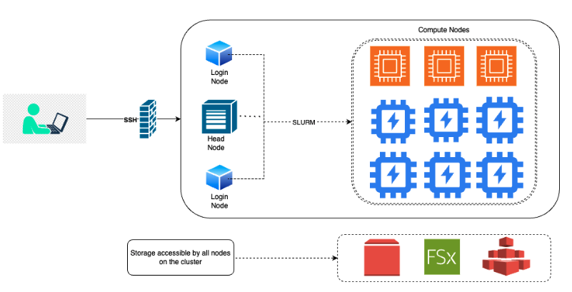

The Emory Hybrid High-Performance Computing Platform for Education and Research Community Cloud Custer (HyPER C3) is a distributed computing system hosted on AWS at Emory. The cluster is designed to provide researchers with the computational resources they need to conduct research. HyperC3 cluster is HIPAA compliant. This means that the cluster is designed to protect the privacy and security of patient health information.

PI can request new user account through the Application Form.
Once granted access to a cluster, a user must log in within 60 days, or their account will be automatically inactivated.
There is a 30-day grace period before automatic deactivation. Account data for inactive users is automatically deleted 90 days from their last login. This represents the 60-day account expiration plus the 30-day grace period. The account Sponsor will be notified before this happens.
Includes both CPU and GPU nodes. Currently has 11 partitions (OnDemand + Reserved). All compute partitions have a wall time setting of 7 days. Default job length is 3 days.
LoginNode: The login node is the node where cluster users will be logged into and submit jobs from.
GPU requirements: Users must specify the number of GPUs, CPU cores, and memory required for their jobs. This information is used by Slurm to schedule jobs and ensure that they do not exceed the available resources. Default partition: If a user does not specify a partition, their job will be submitted to the default partition “c64-m512". This partition is a general-purpose partition that is suitable for most jobs.
GPU partition: The GPU partition is only available for jobs that require GPUs. Jobs submitted to this partition will be scheduled on nodes that have GPUs available. Jobs that require GPUs cannot be submitted to non-GPU partitions.
GPU hours: The maximum number of GPU hours per user is 500 for A100, L40s partitions. This limit is in place to ensure that all users have fair access to the GPU resources.
Head node: The head node is the main node of the cluster. It is not intended for running jobs and can only be accessed by cluster admins.
/users : Default home directory. This is a personal
directory used to store user-specific files such as configuration files, login scripts, and personal data. Limited to 50GB, and is purged when the user account becomes inactive and deactivated. Backed up nightly../scratch : Uses FSx for Lustre storage. Users should use for input/output data storage. Permanent directory, limited to 1TB per user. Contents of this directory are purged after 60 days, but it is strongly recommended to remove unused data after 30 days. Note that contents in /scratch directories are not backed up and cannot be restored administratively so should only be used to hold data that can be easily re-created or backed up someplace else./group : Shared storage accessible to all group members. It is
used to store files used by multiple users, such as data sets, software libraries, and documentation. This directory is permanent and has 1TB storage provided for free per group. Not backed up. Excess storage will be billed to the sponsor of the group. Users have read and write access to their own files unless otherwise specified. Users also have read-only access to their groups’ files unless given specific permission./users and not the
/group directory for security purposes./users directory: du -sh/scratch directory: lfs quota -u netID /scratch/group directory: du -sh /group/[group directory]The use of the community compute partitions, the home storage and scratch storage are at no cost to the users. Group share over 1TB per Sponsor User (i.e. PI) will be charged at $0.3 per GB-mo.
ssh by typing the following command in respective terminal
ssh <your_Emory_NetID>@cirrostratus.it.emory.edu or ssh <your_Emory_NetID>@ondemand.it.emory.edu.
Command rsync is recommended
rsync [options] [SOURCE] [DESTINATION]General command by using scp as follows:
scp <path_to_file> <username>@<remote_system_name>:<destination_path>SFTP
sftp [netid]@cirrostratus.it.emory.edu.cd /scratch/[netid]put [filename]get [filename]Globus Data Transfer. To gain access to Globus / HySci, please email the Network Team at hysci.help@emory.edu.
AWS CLI2
aws s3 cp [filename] s3://mybucket/[filename]aws s3 cp s3://mybucket/[filename] [filename] man [command] would give help page for the following commands, e.g., man rsync. Type q to exit from the help page.rsync is recommended for copying data on clustercp also copys data within clusterrmmkdirmvlsls -l -hvi or nano to edit text files on the clusterless, catgzipzcat [file_name.gz] | less -Sman to see user manual/instructions of Linux tools, e.g., man ls | to take output from the command before | as the input for the command after |awk is highlly recomended for handling large text files.tmux. See tmux cheat sheet.Anaconda (Conda), Spack, Singularity have been installed in the /users directory.R, Python, TensorFlow, PyTorch, Go, Apache MXNet, Nvidia CUDA 11which [software_name]conda create -n myenv conda env list conda env remove --name myenvconda activate myenvconda deactivateconda env remove -n myenvUse software command to run commands
R to start using R. You may copy and paste your R commands from a text script to the session window.ggsave("temp.pdf") or pdf("temp.pdf");
plot();
dev.off();Type command python in the session to start a python session.
One can open the script on cluster by local Editor (e.g., Sublime, Visual Studio Code) after mounting cloud directory to local machine, and just copy/paste command into these R or python sessions
Command which can also be used to check if a software is available under the ${PATH} directory in current session
~/.local/.conda under virtual environment..bashrc filebashrc file under your home directory to save tying of commands.
/users as data input/output directories/scratch as temperary space for input/output data files.sbatch to submit jobs
sbatch in a wrapper shell (job submission) script, for example, you may use sbatch normal.sh with the following normal.sh script:#!/bin/bash
#SBATCH --job-name=normal.R
#SBATCH -–account=general # Use account=’a100v100’ for a100 gpus
#SBATCH --nodes=1 # Number of nodes requested
#SBATCH --ntasks=1 # Number of tasks
SBATCH --partition=a10g-1-gm24-c32-m128 # Name of the partition
#SBATCH --time=4:00:00 # set 4hrs of running time. default time is 7-00:00:00
## This puts all output files in a separate directory.
#SBATCH --output=Out/normal.%A_%a.out
#SBATCH —error=Err/normal.%A_%a.err
--gpus=1 # Enter no.of gpus needed
#SBATCH --mem=8G # Memory Needed
#SBATCH --mail-type=begin # send mail when job begins
#SBATCH --mail-type=end # send mail when job ends
#SBATCH --mail-type=fail # send mail if job fails
#SBATCH --mail-user=[netid]@emory.edu # Replace with your mailid
## Submitting 10 instances of the bash commands listed below
#SBATCH —array=0-10
## For notification purposes. Use your Emory email address only!
#SBATCH —mail-user=<your_email_address>@emory.edu
#SBATCH --mail-type=END,FAIL
## The following are your commands
conda init bash > /dev/null 2>&1 #initializes Conda for Bash shell
source ~/.bashrc
conda activate myenv
python example.py
Rscript /home/<user>/normal.Rsqueue to display information about the run queue.
-a : Displays jobs in all partitions.--help: Displays help message.-l : Reports more of the available information for the selected jobs.-u netid : Displays only jobs by the specified user. scancel [jobid] used to cancel or kill a job.
scontrol used to show information about running or pending jobs
scontrol show job [jobid] to show system details of a submitted jobscontrol show node [node_name] to show node informationscontrol show partition [partition_name] to show partition configurationsrun runs a parallel job on cluster managed by SLURM.
srun --jobid [jobid] --pty --preserve-env bash.nividia-smi to track gpu utilization after login to the ocmpute node.exit.sinfo used to report the state of the cluster partition and nodes.
c<no. of vCPU cores>-m<amount of memory><name of the GPU>-<no. of GPUs>-gm<amount of GPU memory>-c<no. of vCPU cores>-m<amount of memory>Avoid installing Jupyter Notebook: Installing Jupyter Notebook has been restricted in the current upgrade.
Using VSCode only for Editing Purpose: VSCode can be installed on the login node for accessing the files and also users can use the VScode terminal to submit jobs.
Avoid running jobs on Login Node.